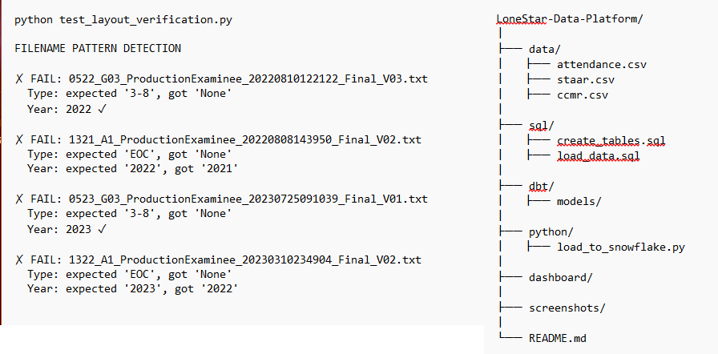
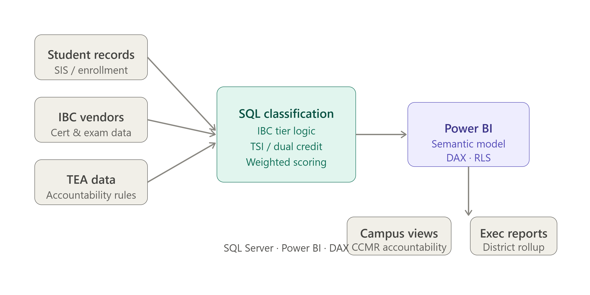
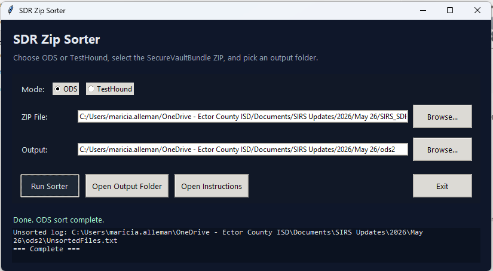
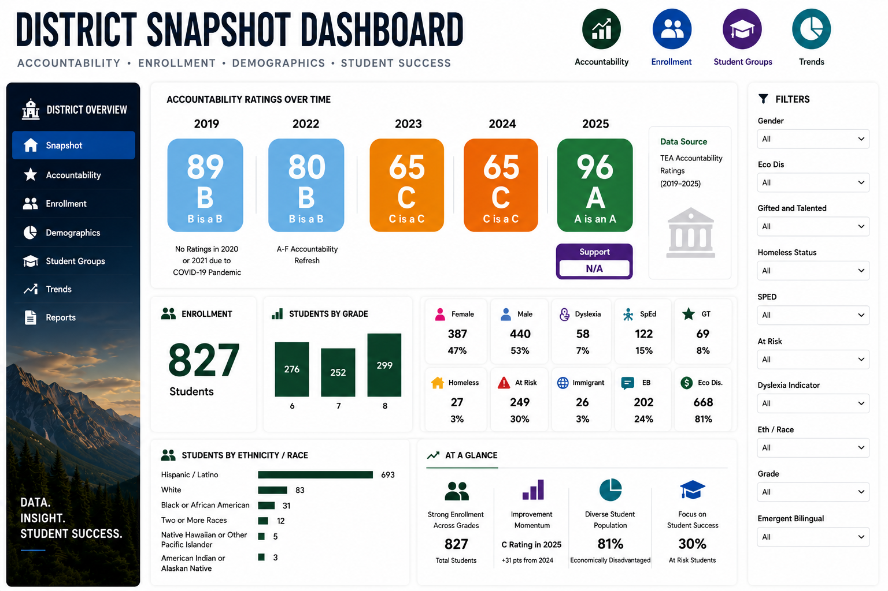
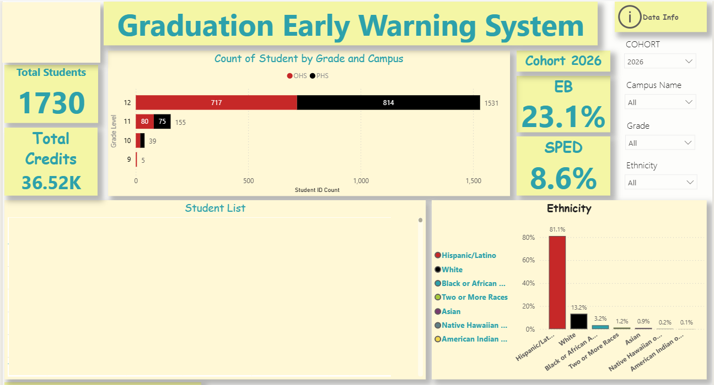
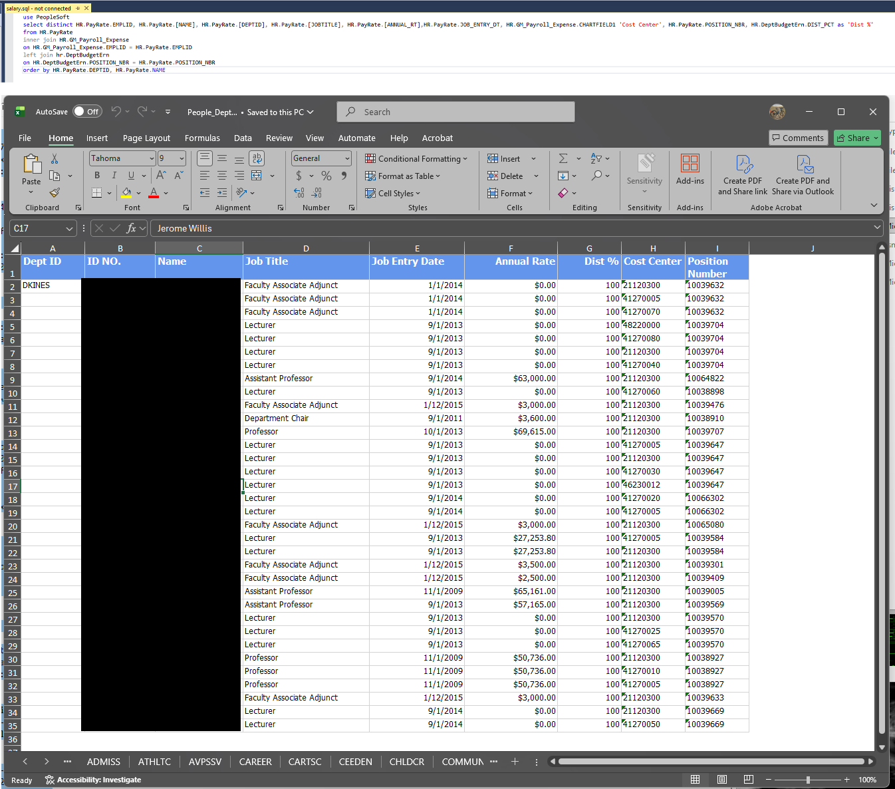

> WORK ARCHIVE LOADED
Operational Systems I Built
Data platforms, dashboards, automation tools, and reporting systems built to reduce manual work,
improve accuracy, and turn messy operational data into usable systems.

Lone Star Data Platform
Layered data warehouse using raw, staging, and analytics schemas.
> Problem
District data lived across multiple spreadsheets, state reports, and vendor systems with no central analytics layer.
> Solution
Designed a Snowflake-based warehouse structure to load, clean, stage, and model education datasets for Power BI reporting.
Snowflake
SQL
Power BI
Data Modeling
> Impact
- Created a modern analytics foundation.
- Separated raw, staging, and analytics layers.
- Prepared district data for reporting and reuse.

CCMR Classification Engine
TEA-aligned accountability logic for student CCMR buckets.
> Problem
CCMR accountability logic required multiple rules across IBC tiers, TSI, dual credit, AP/IB, OnRamps, and special populations.
> Solution
Built classification logic to assign students into CCMR buckets, calculate IBC tier status, and support weighted scoring.
SQL Server
Power BI
DAX
Accountability
> Impact
- Reduced manual CCMR interpretation.
- Aligned reporting to TEA accountability rules.
- Supported campus and district dashboards.

SDR Zip Sorter
Desktop automation tool for organizing state assessment files.
> Problem
SDR assessment files required manual sorting across STAAR, TELPAS, EOC, ODS, and TestHound workflows.
> Solution
Built a Python/Tkinter desktop tool to select ZIP files, choose a workflow mode, sort files, and generate unsorted logs.
Python
Tkinter
ZIP Processing
Automation
> Impact
- Reduced manual file handling.
- Standardized output folder structure.
- Created a GUI for non-technical users.
VIEW GITHUB

Campus Snapshot Dashboard
Multi-year accountability and demographic reporting.
> Problem
Campus leaders needed one place to view accountability ratings, enrollment, demographics, and student indicators.
> Solution
Designed a Power BI dashboard combining rating history, enrollment counts, grade distribution, and student group indicators.
Power BI
DAX
Data Modeling
TEA Data
> Impact
- Created a single-page campus view.
- Improved access to accountability context.
- Supported data-informed campus conversations.

Graduation Early Warning System
Operational dashboard for monitoring cohort progress.
> Problem
Graduation monitoring required student-level visibility into credits, cohort status, campus distribution, and support indicators.
> Solution
Built an interactive Power BI dashboard with cohort counts, credit tracking, student groups, and drilldown detail.
Power BI
DAX
Student Analytics
Executive Reporting
> Impact
- Improved visibility into cohort progress.
- Supported intervention planning.
- Turned static reports into actionable monitoring.

PeopleSoft Data Warehouse
ETL packages importing 79 extracts into SQL Server.
> Problem
Institutional reporting required reliable data from two PeopleSoft databases and repeated extract processes.
> Solution
Designed and maintained SSIS packages to load structured extracts into a SQL Server data warehouse for reporting.
SQL Server
SSIS
SSRS
SharePoint BI
> Impact
- Supported institutional compliance reporting.
- Improved reporting data reliability.
- Created reusable warehouse structures.